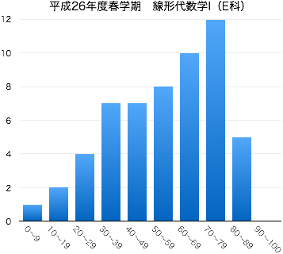

連絡事項
- 7/30：本日は期末試験でした．これをもってこの授業はすべて終了しました．
- 5/30：6月11日に小テストを実施します（授業時間内，30分程度）．出題範囲は6月4日までの内容（「行列の演算」「転置」「逆行列」「連立1次方程式の掃き出し法」）です．授業中の問題演習で解いてもらった問題，または例題として解説した問題の中から出題します（これまでのノート，答案を確認してください）．
-
5/19：第4回授業での問題演習について，解答に関する説明が不十分な点がありまました．詳細はこれを参照してください．
4/7：このページを公開しました．
-
Twitterでこの授業についてツイートしていきます（ハッシュタグは#14S線形代数1E．ツイログはこちら）．質問，意見などのリプライを歓迎します．
-
授業に対する基本的な考え方にも目を通しておいてください．
授業の目的
ベクトルや行列を扱う線形代数学は抽象的であるがゆえに、その概念や技法は、数学はもちろんのこと、工学のさまざまな分野でも応用されている。線形代数学の考え方を身につけるために、基本的概念である行列・行列式について学習する。行列や行列式の計算に習熟するとともに、連立1次方程式の解に関する理論も習得する。
達成目標
- 行列の定義を理解し、基本的な演算ができる。
- 連立1次方程式を行列で表し、掃き出し法を用いて解を求めることができる。
- 行列の階数を求め、それを利用して連立1次方程式の問題を解くことができる。
- 逆行列の定義を理解し、掃き出し法を用いて求めることができる。
- サラスの方法を用いて、2次・3次の行列式を求めることができる。
- クラメルの公式を用いて、連立1次方程式の解を求めることができる。
- 逆行列と行列式の関係を説明することができる。
科目の位置づけ
-
この科目では、線形代数学の導入として、行列や行列式について学習する。また、後続科目である「線形代数学Ⅱ」では、行列式の性質を利用した計算技法や固有値・固有ベクトルを取り扱う。
- 「線形代数学Ⅱ」と併せて履修することにより、線形代数学の基礎知識を習得することができる。
- 線形代数I → 線形代数II
授業の予定と記録
| 第1回 |
4月 |
9日（水） |
ガイダンス，ミニクイズ（連立1次方程式について） |
| 第2回 |
|
16日（水） |
行列 第4章 §1.1 ，行列の演算 (1) 和・実数倍 第4章 §1.2 |
| 第3回 |
|
23日（水） |
行列の演算 (1) 積 第4章 §1.3 |
|
|
30日（水） |
火曜日の授業日 |
| 第4回 |
5月 |
7日（水） |
正方行列，転置行列 第4章 §1.2(p.111-113), 1.4 （問題演習の補足） |
| 第5回 |
|
14日（水） |
逆行列，正則行列 第4章 §2.2(p.128-132) |
| 第6回 |
|
21日（水） |
連立1次方程式と行列 第4章 §2.1 |
| 第7回 |
|
28日（水） |
掃き出し法 (1) 非同次連立1次方程式（解が1つの場合） 第4章 §2.1 |
| 第8回 |
6月 |
4日（水） |
掃き出し法 (2) 非同次連立1次方程式（解が無数にある場合，解が存在しない場合） |
| 第9回 |
|
11日（水） |
小テスト（中間試験） 問題 解答 |
| 第10回 |
|
18日（水） |
行列の階数と連立1次方程式の解，同次連立1次方程式 |
| 第11回 |
|
25日（水） |
逆行列と掃き出し法 第4章 §2.2(p.132, 133) |
| 第12回 |
7月 |
2日（水） |
2次・3次の行列式 第3章 §1.1 |
| 第13回 |
|
9日（水） |
クラメルの公式 第3章 §3.1 |
| 第14回 |
|
16日（水） |
逆行列と行列式 第4章 §2.2 (p.133-136) |
|
|
30日（水） |
期末試験 (14:00 -- 15:00, 1-204教室) |
教科書・参考文献について
- 矢野健太郎・石原繁編 『線形代数』 裳華房 » リンク
- 矢野健太郎・石原繁編『問題集 線形代数』裳華房 » リンク
評価について
- 期末試験80点（共通試験），小テスト・演習課題など20点の配点で評価する．
- 中間期にミニ中間試験を実施する（10点）．
- 毎回の授業で問題演習を実施する（手順は以下）．
- 教科書等の問題を指定し，指定の答案用紙に解答．
- 一定時間の後，各自答え合わせ（必要に応じて解説）．
- 授業終了時に答案用紙を回収．
1回の提出につき1点を加点する（合計10点）．
ほぼ白紙の答案や，単に解答を書き写しただけと思われる場合は加点しない．
期末試験の得点分布と評価など
|  |
| 履修者 | 58 |
| 受験者 | 56 |
| AA | 0 |
| A | 4 |
| B | 12 |
| C | 15 |
| D | 25 |
| 未受験 | 2 |
| 単位修得者 | 31 |
| 単位修得率 | 55.4% |
|